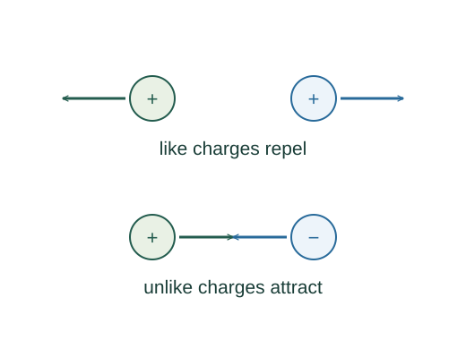

Charge conservation and quantization
Charge quantization and conservation are physical principles. They constrain what processes can occur; they are not derived from the inverse-square force law.
What the symbols mean
e > 0: elementary charge magnitude, exactly 1.602176634 × 10⁻¹⁹ C; n: integer for ordinary isolated composite objects; electron charge is −e.
When this applies
For q = ne as used here, consider ordinary isolated objects built from electrons and nuclei. Quarks carry fractional elementary charges but are not observed as isolated free particles.
Understanding the relation
The starting relation is a physical law used in this description. The argument below explains what it means and how its consequences follow under the stated assumptions.

Separate charge from particle count
Electrons and protons carry equal-magnitude opposite charges. An object is neutral when their total charges cancel, not when it contains no charged constituents.
Transfer electrons between objects
Moving one electron from A to B raises A’s charge by e and lowers B’s by e. The individual charges change but their sum does not.
Apply conservation to a closed system
No charge entering or leaving means the net charge is constant. If charge crosses the boundary, the rate of charge loss equals the outward current.
A closer lookHow does current measure transported charge? ↗Derive current from carrier driftUse net charge in an interaction law
Once the charges and geometry are known, a force law predicts interactions. Conservation alone neither sets force strength nor determines where the charges sit.
A closer lookHow do the charges determine a force? ↗Coulomb’s law and superpositionA worked example
Removing 10¹² electrons from a neutral object leaves charge +1.602 × 10⁻⁷ C. The removed electrons together carry the opposite charge.
Derivation behind this calculation ↗A point to keep straight
Conservation applies to net signed charge. Particle creation can produce oppositely charged pairs without changing that net charge.
Check the assumptions and derivation ↗